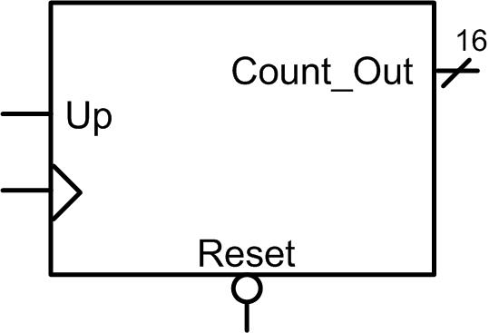
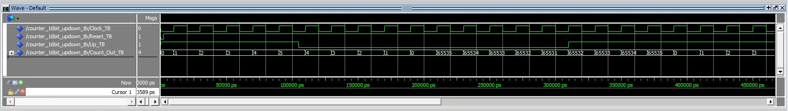

HW 9.4 - Modeling Counters in VHDL
____________________________________________________________________________
9.4.10
Design a VHDL behavioral model for a 16-bit, binary up/down counter using a single process. The block diagram for the entity definition is shown in figure 9.9. When Up=1, the counter will increment. When Up=0, the counter will decrement. In your model, declare Count_Out to be of type std_logic_vector and implement the internal counter functionality with a signal of type integer. Simulate your model using the test bench provided to verify its proper operation by observing the simulation waveforms.

Figure 9.9
Deliverables: You are going to design and simulate your FSM using ModelSim. You will upload your VHDL file (counter_16bit_UpDown.vhd) and a screenshot of your simulation waveform (waveform_9_4_10.jpg) to the DropBox. There is a test bench provided. The test bench will allow your counter to count up to 5 (Up=1) and then make it count down for 10 counts to observe the roll-over from 0 to 65.535. It will then count up for the remaining time to allow you to check the roll-over from 65,535 to 0. You should simulate your counter long enough to see both roll-overs to verify its functionality. For your simulation waveform screenshot, just zoom in on the first ~20 counts to show the decrementing roll-over. Also, display your counter value in UNSIGNED in ModelSim.
Counter_16bit_UpDown_TB.vhd (Right Click and Save Link As to download)
FYI, your simulation waveform should look like this:
